Hướng dẫn cách tính giá thành đơn hàng trên Misa theo Thông tư 200/2014/TT-BTC
I. Tổng quan về cách tính giá thành đơn hàng trên Misa theo Thông tư 200/2014/TT-BTC
1. Điều kiện áp dụng tính giá thành đơn hàng trên Misa theo Thông tư 200/2014/TT-BTC
Áp dụng đối với các doanh nghiệp sản xuất theo đơn đặt hàng của khách hàng như: giày da, may mặc, phim ảnh, băng đĩa nhạc… và đối tượng tập hợp chi phí sẽ là các các đơn hàng cụ thể.
Thông thường mục đích của việc tính giá thành theo đơn hàng là để xác định giá vốn của thương vụ là bao nhiêu, không quan tâm đến đơn giá của từng sản phẩm.
- Ví dụ: phát sinh có đơn hàng đặt 100 bộ bàn ăn, tính giá thành xong thì toàn bộ số bộ bàn ăn này sẽ được bàn giao thẳng cho khách hàng mà không nhập kho.
2. Các bước tính giá thành đơn hàng trên Misa theo Thông tư 200/2014/TT-BTC
- Bước 1: Khai báo nguyên vật liệu sản xuất và thành phẩm
- Bước 2: Khai báo đơn đặt hàng được sử dụng để tập hợp chi phí khi tính giá thành
- Bước 3: Xuất kho nguyên vật liệu sản xuất
- Bước 4: Hạch toán các chi phí phát sinh
- Bước 5: Xác định kỳ tính giá thành
- Bước 6: Phân bổ chi phí chung
- Bước 7. Kết chuyển chi phí
- Bước 8: Nghiệm thu đơn hàng
II. Chi tiết từng bước tính giá thành đơn hàng trên Misa theo Thông tư 200/2014/TT-BTC
Bước 1: Khai báo nguyên vật liệu sản xuất và thành phẩm
- Vào "Danh mục/Vật tư hàng hoá" => chọn "Vật tư hàng hoá" => chọn chức năng "Thêm".
- Khai báo nguyên vật liệu hoặc thành phẩm:
+ Nếu khai báo nguyên vật liệu, sẽ chọn tính chất là "Vật tư hàng hoá".
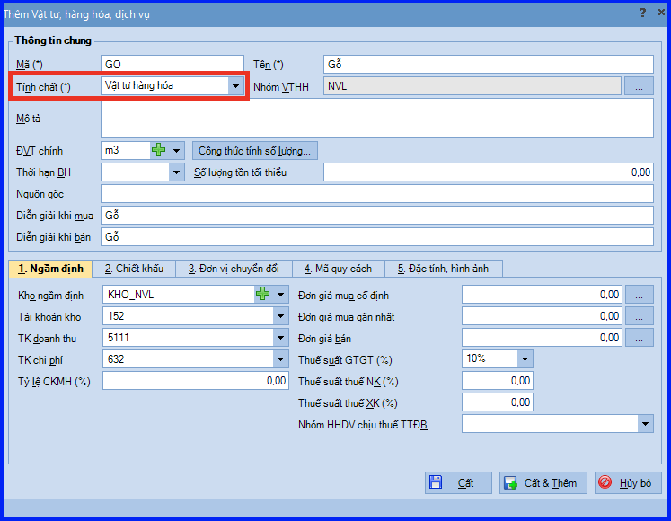
+ Nếu khai báo thành phẩm, sẽ chọn tính chất là "Thành phẩm".
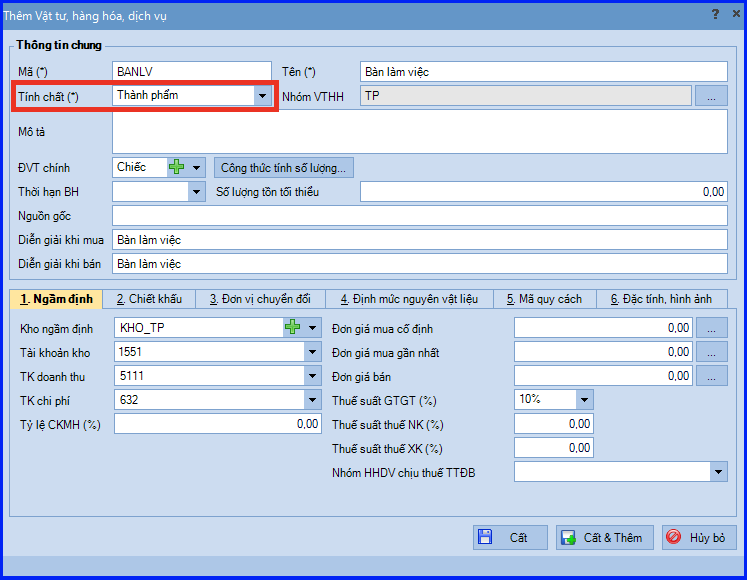
CHÚ Ý: Khi khai báo thành phẩm, thực hiện khai báo thêm định mức nguyên vật liệu sử dụng để sản xuất ra thành phẩm bên tab "Định mức nguyên vật liệu".
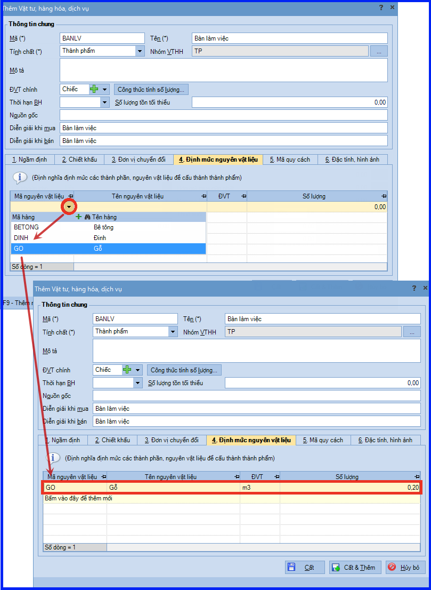
- Sau khi khai báo xong, các bạn ấn "Cất".
Bước 2: Khai báo đơn đặt hàng được sử dụng để tập hợp chi phí khi tính giá thành
- Vào phân hệ "Bán hàng" => chọn tab "Đơn đặt hàng" => chọn chức năng "Thêm".
- Khai báo thông tin về đơn đặt hàng => Để tập hợp được chi phí theo đơn hàng khi tính giá thành, cần phải tích chọn thông tin "Tính giá thành" trên đơn đặt hàng.
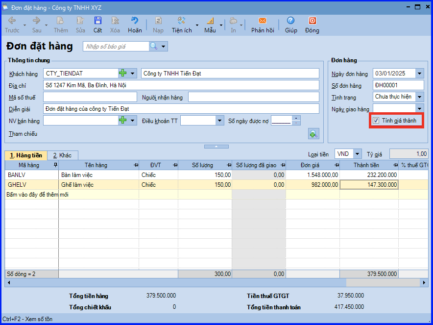
- Sau khi khai báo xong, các bạn ấn "Cất".
CHÚ Ý: Sau khi thực hiện đơn hàng, cần cập nhật tình trạng của "Đơn đặt hàng" theo đúng thực tế để quản lý được tình trạng thực hiện của đơn hàng (nếu đơn đặt hàng được chọn để lập chứng từ bán hàng, phần mềm sẽ tự động chuyển trạng thái của đơn hàng sang "Đang thực hiện").
Bước 3: Xuất kho nguyên vật liệu sản xuất
- Vào phân hệ "Kho" => chọn tab "Lệnh sản xuất" => chọn chức năng "Thêm".
- Khai báo lệnh sản xuất.
- Chọn các thành phẩm và nhập số lượng cần sản xuất, hệ thống sẽ tự động tính ra số lượng nguyên vật liệu cần để sản xuất căn cứ vào thông tin định mức Nguyên vật liệu đã được thiết lập ở Bước 1.
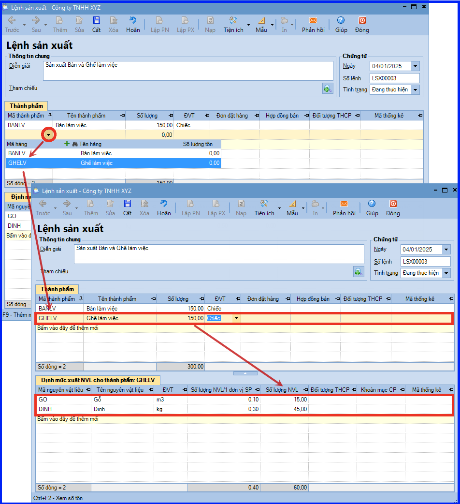
- Các bạn ấn "Cất".
- Chọn chức năng "Lập phiếu xuất" trên lệnh sản xuất.
- Tích chọn các thành phẩm cần xuất Nguyên vật liệu, nhấn "Đồng ý".
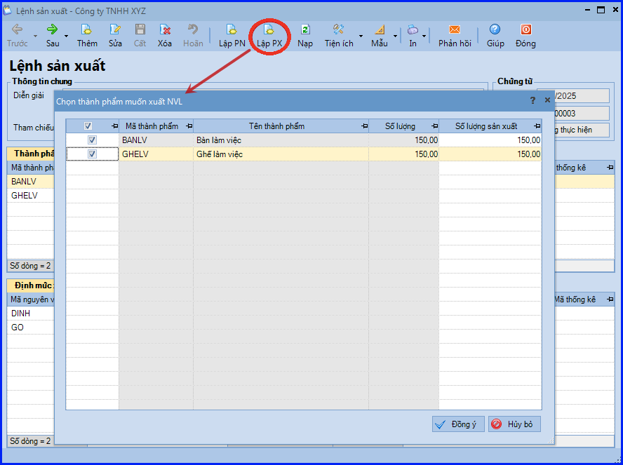
- Nhập bổ sung các thông tin còn thiếu cho chứng từ xuất kho như lý do xuất, TK Nợ,…
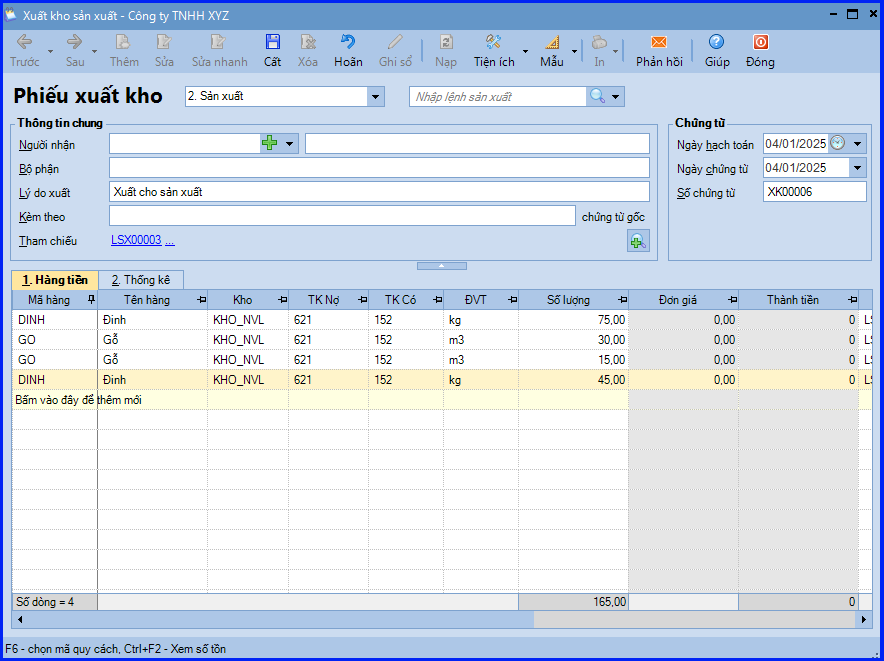
- Chọn thông tin "Đơn hàng" bên tab "Thống kê".
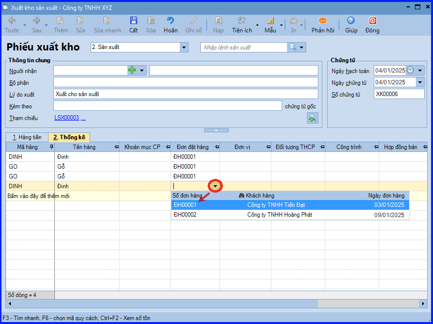
- Các bạn ấn "Cất".
CHÚ Ý:
- Với nguyên vật liệu tính giá xuất kho theo phương pháp "Bình quân cuối kỳ" => đơn giá sẽ được hệ tự động tính sau khi thực hiện chức năng Tính giá xuất kho trên phân hệ "Kho".
- Với nguyên vật liệu tính giá xuất kho theo phương pháp "Bình quân tức thời", "Giá đích danh" và "Nhập trước xuất trước" => đơn giá sẽ được hệ thống tự động tính sau khi chứng từ xuất kho được "Ghi sổ".
- Với những doanh nghiệp không quản lý lệnh sản xuất có thể bỏ qua bước này và vào phân hệ "Kho" => chọn tab "Nhập, xuất kho" để lập chứng từ xuất kho sản xuất.
Bước 4: Hạch toán các chi phí phát sinh
Các chi phí phát sinh liên quan đến việc tính giá thành (Nợ TK 621, 622, 623, 627, 154) có thể được hạch toán trên phân hệ "Quỹ", "Ngân hàng" hoặc "Tổng hợp".
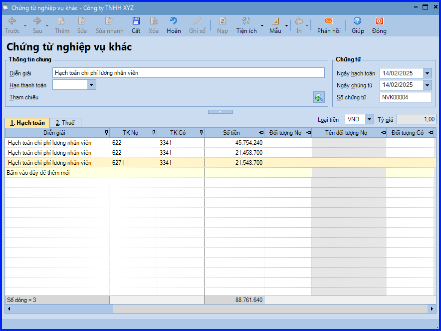
CHÚ Ý:
- Tích chọn chi phí không hợp lý (nếu có)
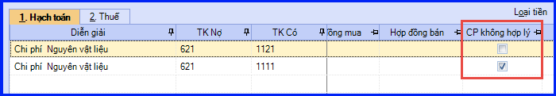
- Khi hạch toán các chứng từ chi phí phát sinh nếu xác định được là chi phí phát sinh cho đơn hàng nào, thì chọn thông tin tại cột "Đơn hàng" hoặc bỏ trống nếu chưa xác định được đơn hàng.
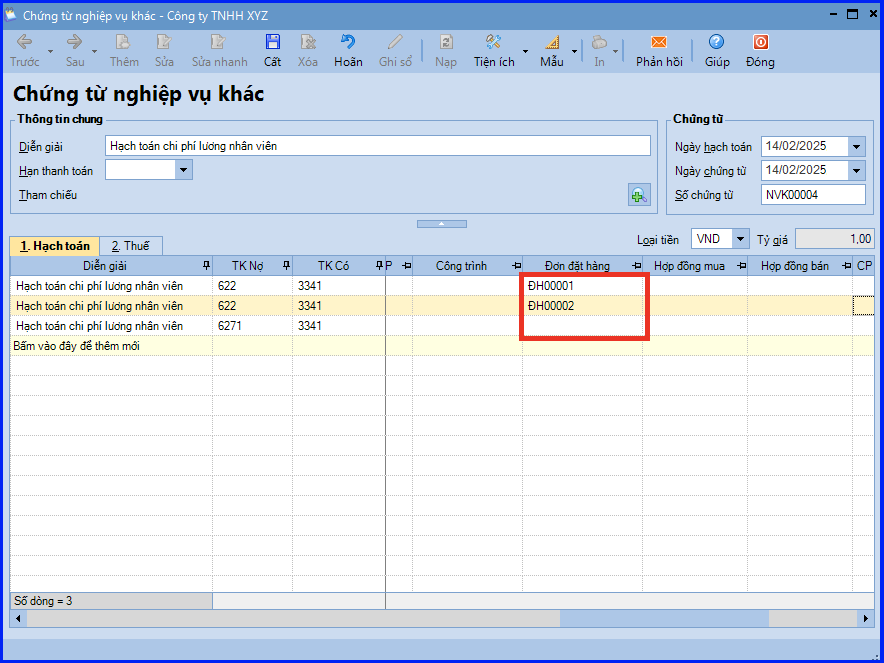
- Tài khoản 623 chỉ áp dụng đối với các những doanh nghiệp trong lĩnh vực xây dựng, những doanh nghiệp có lĩnh vực hoạt động khác thì không chọn tài khoản này.
Bước 5: Xác định kỳ tính giá thành
- Vào phân hệ "Giá thành" => chọn tab "Đơn hàng" => chọn chức năng "Thêm".
- Chọn kỳ tính giá thành và nhấn nút "Lấy dữ liệu" => phần mềm sẽ tự động lấy lên những đơn hàng cần tính giá thành trong kỳ đã chọn.
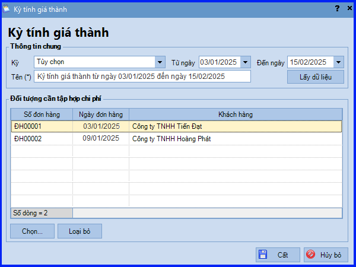
- Các bạn ấn "Cất".
CHÚ Ý: Sử dụng chức năng "Chọn/Loại" bỏ để chọn bổ sung hoặc xóa các đơn hàng trên danh sách.
Bước 6: Phân bổ chi phí chung
Với các doanh nghiệp tính giá xuất kho theo phương pháp "Bình quân cuối kỳ", trước khi thực hiện phân bổ chi phí chung cần phải thực hiện chức năng "Tính giá xuất kho" trên phân hệ "Kho". Sau đó, thực hiện phân bổ chi phí chung theo hướng dẫn sau:
- Vào phân hệ "Giá thành" => chọn tab "Đơn hàng".
- Chọn kỳ tính giá thành trên danh sách và chọn chức năng "Phân bổ chi phí chung" bên thanh tác nghiệp (hoặc nhấn chuột phải, chọn chức năng "Phân bổ chi phí chung").
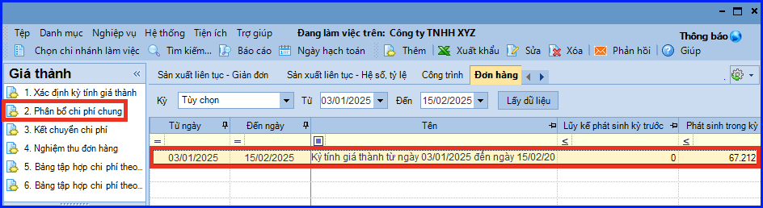
- Các bạn ấn "Đồng ý" => hệ thống sẽ tổng hợp các chứng từ xuất kho Nguyên vật liệu (TK 621), hạch toán chi phí lương (TK 622), chi phí sản xuất chung (TK 627) chưa có thông tin "Đơn hàng" để thực hiện việc phân bổ.
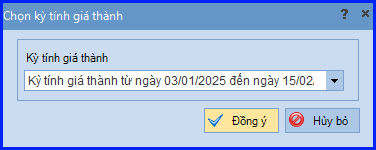
- Nhập tỷ lệ phân bổ và lựa chọn tiêu thức phân bổ.
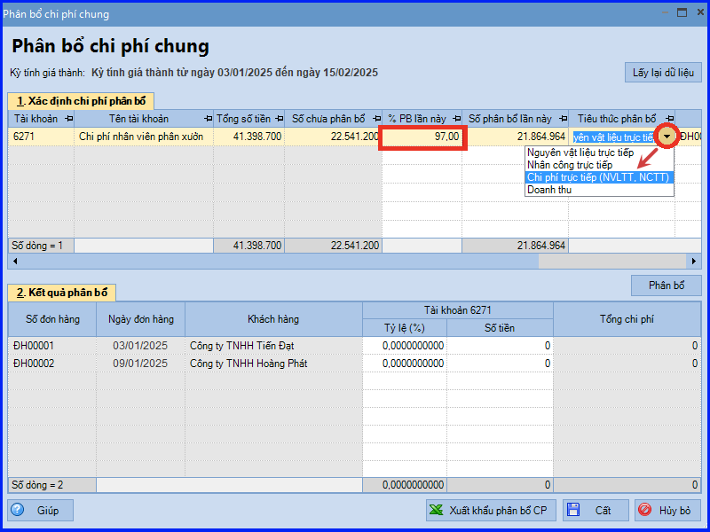
- Các bạn ấn "Phân bổ" => hệ thống sẽ tự động phân bổ chi phí theo từng đơn hàng trong kỳ tính giá thành.
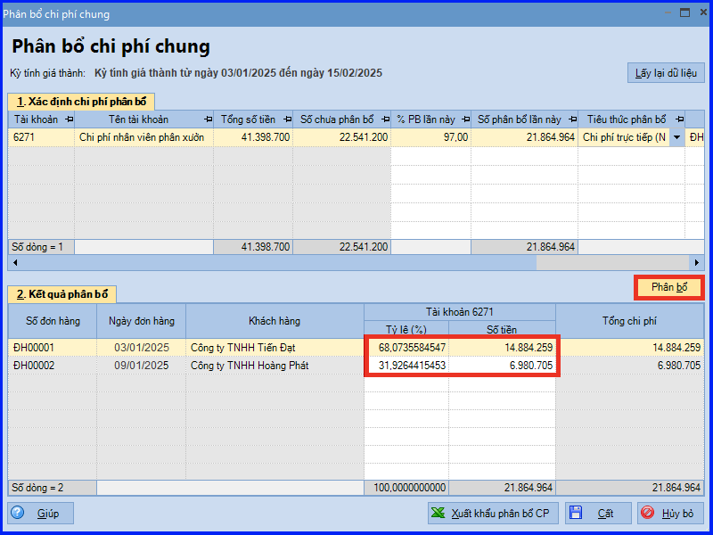
- Các bạn ấn "Cất".
CHÚ Ý:
- Phần mềm sẽ tự động xác định và tách dòng "Chi phí hợp lý/ không hợp lý" (nếu có) dựa vào các chứng từ chi phí phát sinh đã hạch toán.
- Có thể kiểm tra danh sách chứng được tổng hợp để phân bổ chi phí chung bằng cách sử dụng chức năng "Xem" tại cột "Chi tiết chứng từ" trên tab "Xác định chi phí phân bổ".
- Nếu chọn chức năng "Lấy lại dữ liệu" => các thông tin thiết lập phục vụ cho việc phân bổ chi phí chung trước đó sẽ bị xóa đi và phải thực hiện lại việc khai báo.
- Sau khi tính giá thành xong, có thể kiểm tra thông tin chi phí chung được phân bổ trên tab "Bảng phân bổ chi phí chung" của màn hình danh sách kỳ tính giá thành.
Bước 7: Kết chuyển chi phí
- Vào phân hệ "Giá thành" => chọn tab "Đơn hàng".
- Chọn kỳ tính giá thành trên danh sách và chọn chức năng "Kết chuyển chi phí" bên thanh tác nghiệp (hoặc nhấn chuột phải, chọn chức năng "Kết chuyển chi phí").
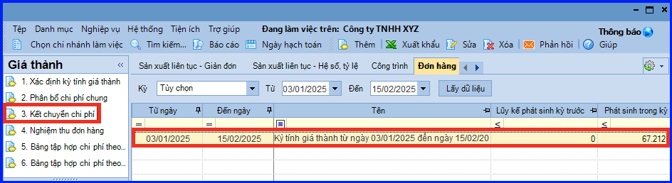
- Các bạn ấn "Đồng ý" => hệ thống sẽ tự động tổng hợp chi phí từ các TK 621, 622, 627,… để kết chuyển sang 154.
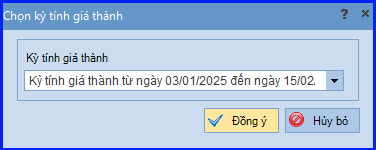
- Kiểm tra chứng từ kết chuyển chi phí.
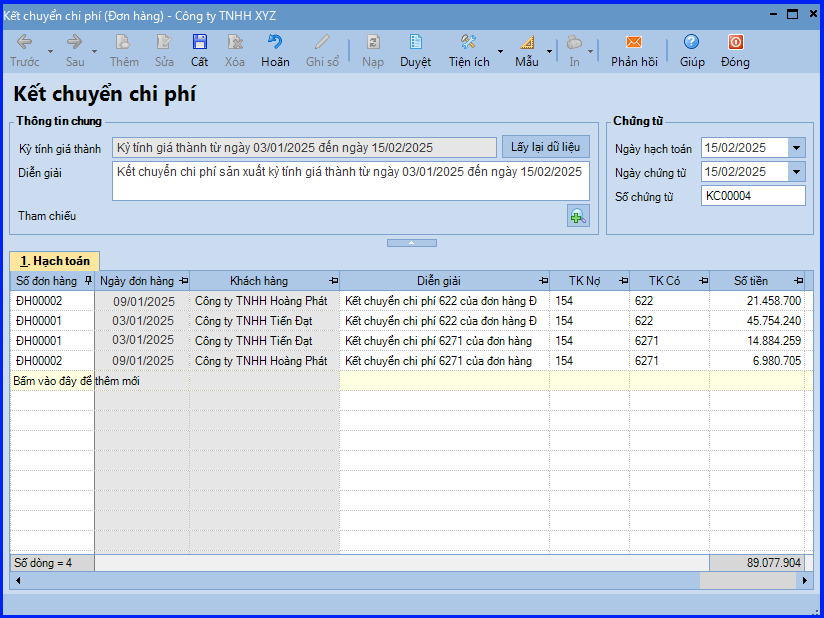
- Các bạn ấn "Cất".
CHÚ Ý:
- Phần mềm sẽ tự động xác định và tách dòng "Chi phí hợp lý/ không hợp lý" (nếu có) dựa vào các chứng từ chi phí phát sinh đã hạch toán, và bảng phân bổ chi phí. Mỗi dòng kết chuyển có Chi Phí không hợp lý thì sẽ tách 2 dòng (dòng trên – Chi Phí hợp lý; dòng dưới – Chi Phí không hợp lý) theo lần lượt TK, đơn hàng.
- Trường hợp muốn xem lại các chứng từ kết chuyển chi phí đã lập trước đó
- Chọn chức năng "Duyệt" trên chứng từ "Kết chuyển chi phí".
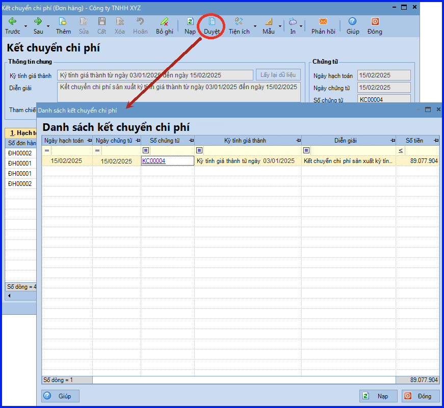
- Hoặc vào menu "Nghiệp vụ" => chọn "Giá thành" => chọn "Đơn hàng" => chọn "Kết chuyển chi phí" để kiểm tra.
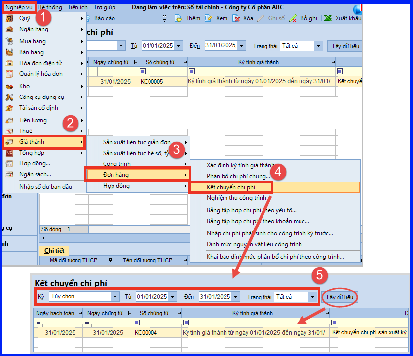
Bước 8: Nghiệm thu đơn hàng
- Vào phân hệ "Giá thành" => chọn tab "Đơn hàng".
- Chọn kỳ tính giá thành trên danh sách và chọn chức năng "Nghiệm thu đơn hàng" bên thanh tác nghiệp (hoặc nhấn chuột phải, chọn chức năng "Nghiệm thu đơn hàng").
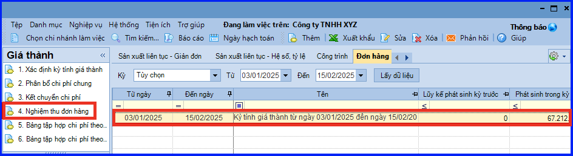
- Chọn kỳ tính giá thành và tích chọn các đơn hàng cần nghiệm thu.
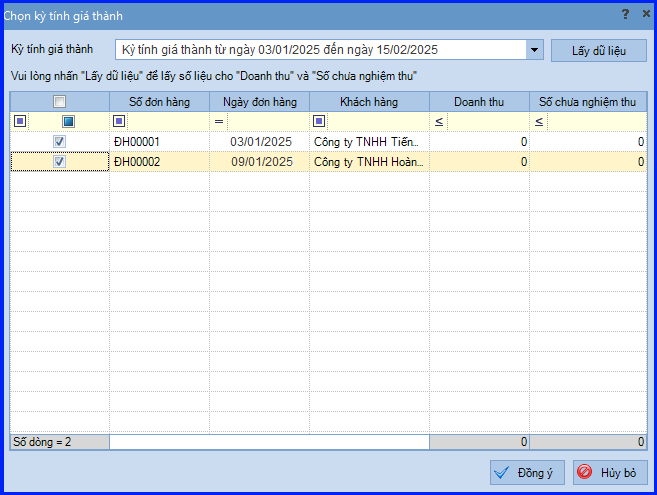
CHÚ Ý: Nhấn "Lấy dữ liệu" để xem được doanh thu đã phát sinh theo từng đơn hàng.
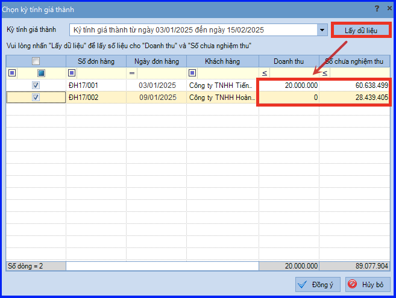
- Các bạn ấn "Đồng ý" => hệ thống sẽ tự động tổng hợp chi phí của từ TK 154 để kết chuyển sang TK 632.
- Nhập kết quả nghiệm thu cho từng đơn hàng.
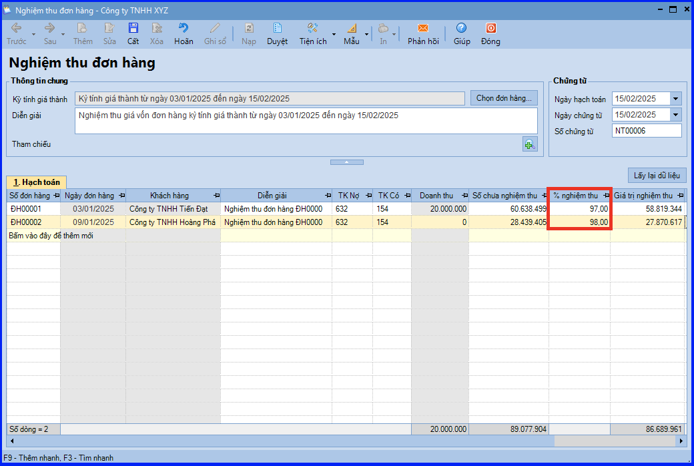
- Các bạn ấn "Cất".
CHÚ Ý:
- Phần mềm sẽ tự động xác định và tách dòng "Chi phí hợp lý/ không hợp lý" (nếu có) dựa trên các thao tác trước đó.
- Trường hợp muốn xem lại các chứng từ nghiệm thu đơn hàng đã lập trước đó, chọn chức năng "Duyệt" trên chứng từ "Nghiệm thu đơn hàng".
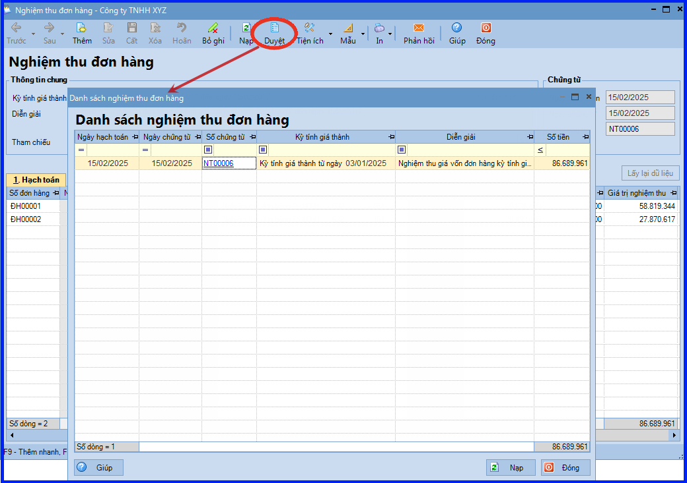
KẾ TOÁN DIỆU TÂM chúc các bạn làm tốt!
=============================
Nếu bạn muốn thành thạo các kỹ năng làm kế toán trên phần mềm Misa
Thì bạn có thể tham khảo "Khóa Học Thực Hành Kế Toán Trên Phần Mềm Misa" tại Công ty đào tạo Kế Toán Diệu Tâm
Trong khóa học này, bạn sẽ được dạy cách lên sổ sách, lập báo cáo tài chính trên phần mềm Misa
Chi tiết về chương trình đào tạo bạn xem tại đây nhé: Khóa học thực hành kế toán trên Misa
=============================
=============================
Nếu bạn muốn thành thạo các kỹ năng làm kế toán trên phần mềm Misa
Thì bạn có thể tham khảo "Khóa Học Thực Hành Kế Toán Trên Phần Mềm Misa" tại Công ty đào tạo Kế Toán Diệu Tâm
Trong khóa học này, bạn sẽ được dạy cách lên sổ sách, lập báo cáo tài chính trên phần mềm Misa
Chi tiết về chương trình đào tạo bạn xem tại đây nhé: Khóa học thực hành kế toán trên Misa
=============================